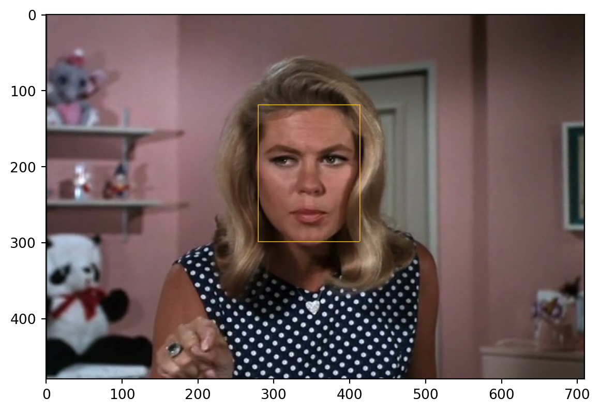
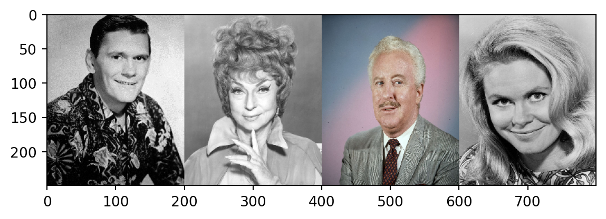

import os
import numpy as np
import pandas as pd
import matplotlib.pyplot as plt
import dvt
import cv21.2 Tutorial II: Moving Images
This notebook explores the theory and methods introduced in the book Distant Viewing (MIT Press, 2023) to study visual style in two network era sitcoms. Specifically, we will look at every televised episode of the series Bewitched (1964-1972) and I Dream of Jeannie (1965-1970). In the notebook we will first walk through the methodology using a short 45 second sample video and going slowly through all of the steps. Then, due to time, file size, and copyright constraints, we will load a precomputed set of image annotations mirroring those from the 45 second sample and then use this larger set for the purpose of analysis. Here are the specific learning outcomes for the tutorial:
- Explain how digital videos can be understood as a sequence of images.
- Apply functions in the distant viewing toolkit to a short video file.
- Calculate shot breaks using a state-of-the-art computer vision algorithm and connect shot breaks to research questions in media studies.
- Classify the estimated identity of characters using computer visional algorithms and face embeddings.
- Illustrate how to address humanities research questions using computer vision algorithms applied to a corpus of television shows.
This notebook does not require any previous knowledge of Python or computer vision. However, it moves fairly quickly through the preliminary steps of working with digital images and only explains the most important aspects of the Python code in each step. For a more in-depth introduction to how computers view images images and python, we recommend first following the Distant Viewing Tutorial: Movie Posters and Color Analysis notebook using the movie posters corpus, which can be accessed here. For more about the Python package that we built, Distant Viewing Toolkit (dvt), please visit our GitHub repository.
Setup
Network-Era Sitcom Dataset
Before we start looking at the computational steps needed to work with moving image data, it’s helpful to understand the humanities research questions that motivate this work. Here, we are concerned with two popular U.S. sitcoms from the 1960s and early 1970s: Bewitched (1964-1972) and I Dream of Jeannie (1965-1970). Here is metadata about each of the episodes from the entire runs of the two shows:
meta = pd.read_csv("data/ttl_sitcom_metadata.csv")
meta| series | season | number | title | director | writer | air_date | description | |
|---|---|---|---|---|---|---|---|---|
| 0 | Bewitched | 1 | 1 | I, Darrin, Take This Witch, Samantha | William Asher | Sol Saks | 1964-09-17 | In the pilot episode, strangers Samantha (Eliz... |
| 1 | Bewitched | 1 | 2 | Be It Ever So Mortgaged | William Asher | Barbara Avedon | 1964-09-24 | Endora is still surprised that Sam is willing ... |
| 2 | Bewitched | 1 | 3 | It Shouldn't Happen to a Dog | William Asher | Jerry Davis | 4-10-01)[3 | Samantha is preparing dinner for Darrin's pote... |
| 3 | Bewitched | 1 | 4 | Mother Meets What's-His-Name | William Asher | Danny Arnold | 1964-10-08 | Samantha is visited by Gladys Kravitz, June Fo... |
| 4 | Bewitched | 1 | 5 | Help, Help, Don't Save Me | William Asher | Danny Arnold | 1964-10-15 | Darrin has been spending all hours working on ... |
| ... | ... | ... | ... | ... | ... | ... | ... | ... |
| 388 | I Dream of Jeannie | 5 | 22 | Eternally Yours, Jeannie | Joseph Goodson | James Henerson | 1970-03-17 | Tony gets a letter from his old high school sw... |
| 389 | I Dream of Jeannie | 5 | 23 | An Astronaut in Sheep's Clothing | Bruce Kessler | James Henerson | 1970-03-24 | After Jeannie blinks Tony a drum major's unifo... |
| 390 | I Dream of Jeannie | 5 | 24 | Hurricane Jeannie | Claudio Guzman | James Henerson | 1970-04-28 | A hurricane traps Tony, Jeannie, Roger and Dr.... |
| 391 | I Dream of Jeannie | 5 | 25 | One Jeannie Beats Four of a Kind | Michael Ansara | Perry Grant, Richard Bensfield | 1970-05-19 | General Schaeffer tells Major Healey of a card... |
| 392 | I Dream of Jeannie | 5 | 26 | My Master, the Chili King | Claudio Guzman | James Henerson | 1970-05-26 | Tony's cousin Arvel (Gabriel Dell) persuades J... |
393 rows × 8 columns
These two series are often compared and constrasted to one another, with I Dream of Jeannie being seen as an attempt by NBC to copy the success of ABC’s Bewitched, which started one season prior. While a lot has been written about the cultural significance of these two shows, prior research had not seriously considered the visual style of the two shows. We are interested in how the way that the shows are shot and edited contribute to our understanding of questions such as who is/are the main characters, to what extent does the visual style contribute to relationships between the characters, and how do these aspects change over time. The latter is particularly interesting because both shows started their broadcasts in black-and-white before transitioning to color for the majority of the later seasons.
Sample Movie File
Now that we have some ideas of the big questions we are interested in, let’s look at a short sample from one of the series to understand the computational steps needed to work with moving images. When doing computational analyses with visual and audiovisual materials, it is important to frequently go back and look at specific examples to ensure that we understand how our large-scale analysis connects back to the actual human experience of viewing. In this notebook we are going to start by working slowly with the process of creating annotations that summarize a short 45 second clip from the first episode of the third season of the show Bewitched. Running the code below shows an embedded version of the clip that can be watched within this page:
We suggest watching the clip a couple of times. Try to pay attention (and maybe even write down) the number of shots in the clip and how they are framed. In the next few sections, we will use computer vision algorithms to try to capture these features as structured annotations.
Working with Video Frames as Images
Video file formats such as mp4, avi, and ogg typically store moving images in a complex format that is highly optimized to reduce file sizes and decompression time. When working with moving images computationally in programs such as Python, however, we typically decompress these files and turn them into a sequence of individual images stored as arrays of pixels, with one image for each frame in the input video. The distant viewing toolkit (dvt) contains several functions to efficently work with video files in Python. In this section, we will demonstrate how these work.
First, we can use the video_info function to access metadata about a video file. Here, we will load the metadata for our sample video file, which displays the number of frames, the height and width of each frame in pixels, and rate of playback given as frames per second (fps).
info = dvt.video_info('data/bewitched_sample.mp4')
info{'frame_count': 1319.0,
'height': 480.0,
'width': 710.0,
'fps': 29.97002997002997}As we see in the metadata, even this short clip has 1319 individual frames. When working with an entire television episode, let along a feature-length movie file, it quickly becomes difficult to load all of frames from a video into Python at once. The image sizes, particularly once we start looking at materials in high-definition, are just too large to hold these all in even a computer’s memory at the same time.
The distant viewing toolkit (dvt) offers an alternative approach using the yield_video function. It allows us to write a loop object which loads in each frame of the video file one by one. Specifically, each time the yield function is called, it returns the next frame as an array of pixels, an integer describing the frame number from the start of the video file, and a time code giving the number of seconds since the start of the video.
The code below show an example of how the yield_video function works. We cycle through each of the frames. For each frame we store the frame number, the timestamp, and the average pixel values (a measurement of the frame’s brightness). Then, we turn this into a tabular data frame with one row for each frame in the video.
output = {'frame': [], 'time': [], 'brightness': []}
for img, frame, msec in dvt.yield_video("data/bewitched_sample.mp4"):
output['frame'].append(frame)
output['time'].append(msec)
output['brightness'].append(np.mean(img))
output = pd.DataFrame(output)
output| frame | time | brightness | |
|---|---|---|---|
| 0 | 0 | 0.000000 | 87.132526 |
| 1 | 1 | 0.033367 | 87.221070 |
| 2 | 2 | 0.066733 | 87.496499 |
| 3 | 3 | 0.100100 | 87.620548 |
| 4 | 4 | 0.133467 | 87.445358 |
| ... | ... | ... | ... |
| 1314 | 1314 | 43.843800 | 68.011383 |
| 1315 | 1315 | 43.877167 | 68.054915 |
| 1316 | 1316 | 43.910533 | 68.043498 |
| 1317 | 1317 | 43.943900 | 68.028847 |
| 1318 | 1318 | 43.977267 | 67.969112 |
1319 rows × 3 columns
Brightness is one of the simpliest annotations that we can use to summarize an image. But, even this simple measurement can already provide a rough way of representing our video clip. To see this, let’s plot the brightness of the frame over time.
plt.plot(output['time'], output['brightness'])
plt.show()
Looking at the brightness, particularly the large jumps in the values, can you identify the shot breaks that you found when watching the video? There is a steady increase in the brightness from about 15 seconds to 20 seconds. What does this correspond to in the video file?
Shot Boundary Detection
One of the first tasks that we often want to perform on a video file is to identify the breaks between shots. This process is called shot boundary detection. As we saw in the brightness plot above, some simple heuristics can be used to approximately identify many kinds of shot breaks. If we want more accurate predictions, which do not falsely identify quick motion as a shot boundary or fail to find subtle breaks such as cross-fades, we need to make use of a more complex algorithm. The distant viewing toolkit (dvt) includes a neural-network based shot boundary detection algorithm that we have found works well across many different genres and input types.
To run the built-in shot boundary detection algorithm, we need to first create a new annotator with the AnnoShotBreaks function. Then, we run the annotator over the video file. This is the only annotator in the toolkit that works directly with a video file rather than individual images or frames. The Python code will print out its progress through the file as it runs, returning a dictionary object with the predicted boundaries.
anno_breaks = dvt.AnnoShotBreaks()
out_breaks = anno_breaks.run("data/bewitched_sample.mp4")/Users/admin/gh/dvscripts/env/lib/python3.12/site-packages/dvt/shots.py:29: FutureWarning: You are using `torch.load` with `weights_only=False` (the current default value), which uses the default pickle module implicitly. It is possible to construct malicious pickle data which will execute arbitrary code during unpickling (See https://github.com/pytorch/pytorch/blob/main/SECURITY.md#untrusted-models for more details). In a future release, the default value for `weights_only` will be flipped to `True`. This limits the functions that could be executed during unpickling. Arbitrary objects will no longer be allowed to be loaded via this mode unless they are explicitly allowlisted by the user via `torch.serialization.add_safe_globals`. We recommend you start setting `weights_only=True` for any use case where you don't have full control of the loaded file. Please open an issue on GitHub for any issues related to this experimental feature.
self.model.load_state_dict(torch.load(model_path))Processing video frames 50/1319Processing video frames 100/1319Processing video frames 150/1319Processing video frames 200/1319Processing video frames 250/1319Processing video frames 300/1319Processing video frames 350/1319Processing video frames 400/1319Processing video frames 450/1319Processing video frames 500/1319Processing video frames 550/1319Processing video frames 600/1319Processing video frames 650/1319Processing video frames 700/1319Processing video frames 750/1319Processing video frames 800/1319Processing video frames 850/1319Processing video frames 900/1319Processing video frames 950/1319Processing video frames 1000/1319Processing video frames 1050/1319Processing video frames 1100/1319Processing video frames 1150/1319Processing video frames 1200/1319Processing video frames 1250/1319Processing video frames 1300/1319Processing video frames 1319/1319We will convert the output of the shot boundary detection into a tabular dataset as well as add the start time and end time information using the metadata that we grabbed from the video_info function above. Here is what the algorithm found for this video clip:
shot = pd.DataFrame(out_breaks['scenes'])
shot['mid'] = (shot['start'] + shot['end']) // 2
shot['start_t'] = shot['start'] / info['fps']
shot['end_t'] = shot['end'] / info['fps']
shot| start | end | mid | start_t | end_t | |
|---|---|---|---|---|---|
| 0 | 0 | 98 | 49 | 0.000000 | 3.269933 |
| 1 | 99 | 184 | 141 | 3.303300 | 6.139467 |
| 2 | 185 | 427 | 306 | 6.172833 | 14.247567 |
| 3 | 428 | 1006 | 717 | 14.280933 | 33.566867 |
| 4 | 1007 | 1213 | 1110 | 33.600233 | 40.473767 |
| 5 | 1214 | 1318 | 1266 | 40.507133 | 43.977267 |
Take a few minutes to confirm that these shot boundaries correspond to the ones that you found when watching the video. You can even rewatch (and pause at each break) the video and see that it corresponds with the breaks that were automatically identified in the shot boundary detection.
In the next section we will look at face detection and identification. This is a common task when working with movie image data but ultimately works using individual images. To make this a bit easier to work with at first, we will use the following code to build a dataset with one frame from each of the detected shots in the video clip file. Specifically, we grab the middle frame from each cut, as specified in the shot data frame above.
img_list = []
for img, frame, msec in dvt.yield_video("data/bewitched_sample.mp4"):
if frame in shot['mid'].values:
img_list.append(img)To get a sense of what these look like, we can combine the images and convert them into thumbnails to get a view of what the six shots from our sample video file look like.
img_comb = np.hstack(img_list)
img_comb = cv2.resize(img_comb, (img_comb.shape[1] // 5, img_comb.shape[0] // 5))
plt.imshow(img_comb)
We will use the full versions of these six images in the next section as we identify the location, size, and identity of the characters in each shot.
Face Detection and Facial Recognition
Locating and identifying the faces present in a particular frame of a video file is a common way of understanding the narrative structure and visual style of the source material. In this section, we will see how to work with faces using the functions within the distant viewing toolkit (dvt) applied to the six images from the sample video file that we extracted in the previous section. After seeing how to do this with a static set of images, in the following section we will see how to put this together in a way that would scale to larger video files.
To get started, we will load the face detection annotator AnnoFaces that is included in the distant viewing toolkit. The first time this is run, the function will automatically download the relevant model files and save them locally in our Colab workspace.
anno_face = dvt.AnnoFaces()/Users/admin/gh/dvscripts/env/lib/python3.12/site-packages/dvt/face.py:38: FutureWarning: You are using `torch.load` with `weights_only=False` (the current default value), which uses the default pickle module implicitly. It is possible to construct malicious pickle data which will execute arbitrary code during unpickling (See https://github.com/pytorch/pytorch/blob/main/SECURITY.md#untrusted-models for more details). In a future release, the default value for `weights_only` will be flipped to `True`. This limits the functions that could be executed during unpickling. Arbitrary objects will no longer be allowed to be loaded via this mode unless they are explicitly allowlisted by the user via `torch.serialization.add_safe_globals`. We recommend you start setting `weights_only=True` for any use case where you don't have full control of the loaded file. Please open an issue on GitHub for any issues related to this experimental feature.
self.mtcnn.load_state_dict(torch.load(model_path_mtcnn))
/Users/admin/gh/dvscripts/env/lib/python3.12/site-packages/dvt/face.py:42: FutureWarning: You are using `torch.load` with `weights_only=False` (the current default value), which uses the default pickle module implicitly. It is possible to construct malicious pickle data which will execute arbitrary code during unpickling (See https://github.com/pytorch/pytorch/blob/main/SECURITY.md#untrusted-models for more details). In a future release, the default value for `weights_only` will be flipped to `True`. This limits the functions that could be executed during unpickling. Arbitrary objects will no longer be allowed to be loaded via this mode unless they are explicitly allowlisted by the user via `torch.serialization.add_safe_globals`. We recommend you start setting `weights_only=True` for any use case where you don't have full control of the loaded file. Please open an issue on GitHub for any issues related to this experimental feature.
self.vggface.load_state_dict(torch.load(model_path_vggface))To apply the annotation, we pass an image file to the run method of the annotator. Optionally, we can set the flag visualize to True in order to return a visualization of the detected face(s). Let’s run the annotation over the third image (remembering that Python starts counting at zero, so the third image is selected by selecting the image in position 2).
out_face = anno_face.run(img_list[2], visualize=True)Because we set the visualization flag to True, the returned results include an object called img that has a copy of the input frame along with a box around any detected faces. Here we see that the algorithm has detected one face, which is likely the number of faces a human annotator would also have found in the frame.
plt.imshow(out_face['img'])
The visualization of the detected face is great for a one-off understanding of the algorithm. In order to store this information in a way that we can use for computational analyses, we need to have the location of the detected face represented in a strutured format. This is found in the boxes element of the output, which is designed to be convertable into a pandas data frame. Here is all of the structured information about the face detected in the frame above:
pd.DataFrame(out_face['boxes'])| face_id | x | xend | y | yend | prob | |
|---|---|---|---|---|---|---|
| 0 | 0 | 279 | 413 | 119 | 299 | 0.999931 |
If you followed along with the introductory notebook using movie posters, this is the same information that we used to detect the number of faces present on each poster. One element that makes working with moving images different is that we usually have the same people showing up over and over again across frames and shots. Labeling the identity of the people present in each shot is an essential step in understanding the narrative structure of the material. The distant viewing toolkit (dvt) also includes information for doing facial recognition. This requires a bit more care as we need to start by identifying the characters that we want to identify in the first place.
By default, when we run the face detection algorithm, each detected faces is also assocaited with a sequence of 512 numbers called an embedding. The individual numbers do not have a direct meaning, but are instead defined in a relative way such that if two images of the same person are each associated with an embedding, we would expect the embeddings to be more similar to one another than they are to the embeddings of other faces. As an example, we can see the shape of the embedding object from our example frame above.
out_face['embed'].shape(1, 512)One way to use these embeddings is to first identify portraits of the actors that we are interested in from the video file, and then associate each of these with a character name. Then, we can compute the embeddings of these faces and store them. Finally, each time we detect a face in a frame, we can check how similar the embedding of the detected face is compared to the faces in our reference set. If one of the reference characters is sufficently close, we will assume that we have found the associated character.
One of the objects that we downloaded in the setup section of this notebook was a folder with portraits of the four main actors from Bewitched named with the name of their character in the show. In the code below we cycle through these images and record the name and embedding of each of the faces. Also, for reference, we store a thumbnail of the actor’s portrait.
face_embed = []
face_name = []
face_img = []
for path in sorted(os.listdir("data/faces")):
img = dvt.load_image("data/faces/" + path)
out_face = anno_face.run(img)
face_embed += [out_face['embed'][0,:]]
face_name += [path[:-4]]
face_img += [cv2.resize(img, (200, 250))]
face_embed = np.vstack(face_embed)
face_name = np.array(face_name)
face_img = np.hstack(face_img)Here are the portraits of the characters. They are ordered in alphabetical order: Darrin, Endora, Larry, and Sam.
plt.imshow(face_img)
In order to measure the similarity of two embeddings, we use a mathematical technique called a dot product. This number will be 1 if two embeddings are exactly the same and -1 if they are exactly opposite one another. Typically, two faces that are of different people will have a similar score somewhere close to zero. Let’s start by seeing the similarity scores between the set of four portraits.
np.dot(face_embed, face_embed.T)array([[ 1. , 0.06135434, -0.19991453, 0.1696034 ],
[ 0.06135434, 1.0000001 , -0.09233201, -0.03006548],
[-0.19991453, -0.09233201, 0.9999998 , -0.03063131],
[ 0.1696034 , -0.03006548, -0.03063131, 0.9999999 ]],
dtype=float32)The first column is Darrin, and then compares Darrin to each of the four images. Since he is the first image, we see .99999 because the photo is being compared to itself. Then, image of Darin is compared to Endora (.06135), Larry (-.19993), and Samantha (.16960).
The values along the diagonal are all 1 (or very close to one) because we are comparing one embedding to itself. All of the other similarity scores are somewhere between -0.2 and +.17, which is as expected since each of the portraits shows a unique actor.
Now, let’s compare these reference faces to the embedding of the individual frame that we started this section with: the middle frame from the third shot showing Samantha in a pink bedroom (img_list[2]).
out_face = anno_face.run(img_list[2])
dist = np.dot(face_embed, out_face['embed'].T)
distarray([[ 0.15695155],
[ 0.08723371],
[-0.04768787],
[ 0.61289704]], dtype=float32)Here we see that there is a much large similarity score (0.59) between this face and the last character in our set. And if we look at the image, we see in fact that this is the same character: Samantha. We can associate the face with the character name algorithmically using the following code.
face_name[np.argmax(dist, axis = 0)]array(['sam'], dtype='<U6')The code above associates the face with the character that has the highest similarity. It would be a good idea to also store the similarity score and then only trust the relationship if this score is sufficently large, which we can do with the following code.
np.max(dist, axis = 0)array([0.61289704], dtype=float32)Now that we understand how this process works for a single image, let’s apply this technique to each of the shots in the sample file.
Building Annotations from a Video File
We can combine the techniques above with the yield_video function from dvt to identify faces in each of the shots. It’s possible to run the face detection algorithm over every frame, and this has some advantages. For the interest of time and simplicity, we will only use our face detection algorithm on the middle frame of each detected shot.
output = []
for img, frame, msec in dvt.yield_video("data/bewitched_sample.mp4"):
if frame in shot['mid'].values:
out = anno_face.run(img)
if out['boxes']:
out_df = pd.DataFrame(out['boxes'])
out_df['frame'] = frame
out_df['time'] = msec
dist = np.dot(face_embed, out['embed'].T)
out_df['character'] = face_name[np.argmax(dist, axis = 0)]
out_df['confidence'] = np.max(dist, axis = 0)
output.append(out_df)
output = pd.concat(output)
output = output[output['prob'] > 0.9]
output| face_id | x | xend | y | yend | prob | frame | time | character | confidence | |
|---|---|---|---|---|---|---|---|---|---|---|
| 0 | 0 | 303 | 420 | 87 | 256 | 0.998564 | 49 | 1.634967 | sam | 0.730811 |
| 0 | 0 | 241 | 455 | 181 | 451 | 0.999004 | 141 | 4.704700 | endora | 0.845351 |
| 0 | 0 | 279 | 413 | 119 | 299 | 0.999931 | 306 | 10.210200 | sam | 0.612897 |
| 0 | 0 | 110 | 175 | 165 | 240 | 0.998715 | 717 | 23.923900 | darrin | 0.377601 |
| 1 | 1 | 407 | 465 | 116 | 193 | 0.996172 | 717 | 23.923900 | larry | 0.509248 |
| 0 | 0 | 230 | 444 | 82 | 374 | 0.999645 | 1110 | 37.037000 | darrin | 0.685214 |
| 0 | 0 | 225 | 428 | 151 | 410 | 0.999964 | 1266 | 42.242200 | larry | 0.803259 |
Take a few minutes to go back to the thumbnail images from each of these detected faces and see how they line up with the characters that are actually present (if you are not familiar with Bewitched, use the portraits to learn each of the character names). You should see that they line up well, though the fourth shot has a fairly low confidence for Darrin due to the fact that his face is fairly small in the middle frame. We could do better if we added the first frame of the shot, which is more tightly focused on Darrin. We always recommend taking a look and reviewing the results as you go. Then, we can adjust our approach as needed based on the audiovisual data that we are working with and the areas of inquiry animating our analysis.
Full Corpus Analysis
We now have all of the methods and code needed to identify shots and faces in a moving image file. If we had an entire episode of Bewitched, we could run the exact same sequence of steps above on the full episode without changing anything. The only difference would be that the results would take much longer to finish running. If we had a folder with every episode of the series, we would just need to add one extra layer to our loop to cycle over each video file and make sure to include information about the filename on each row of the output. Finally, if we wanted to extend this to another series, we would just need to add the portraits of any characters that we wish to identify to our folder of reference images.
We return to the two shows — Bewitched and I Dream of Jeanine — that are central to Chapter 5 of Distant Viewing. The chapter centers around a comparison of the two magical sit-coms, which we can do by putting together shot boundary and then face detection and recognition.
The full set of video files for the two shows are quite large and the files are under copyright. It also takes a long time to process all of these files, particularly within a free Colab session. Since it is not possible to run the annotations directly on the full set here, we will instead work with the pre-computed annotations that were downloaded during the notebook setup. The structure of the dataset includes one row for each shot, with data about the timing of the shot and the number of faces.
shots = pd.read_csv("data/ttl_sitcom_shots.csv")
shots| series | video | sid | frame_start | frame_stop | time | num_face | |
|---|---|---|---|---|---|---|---|
| 0 | Bewitched | bw_s01_e01 | 0 | 0 | 331 | 13.84 | 2 |
| 1 | Bewitched | bw_s01_e01 | 1 | 332 | 508 | 7.38 | 2 |
| 2 | Bewitched | bw_s01_e01 | 2 | 509 | 586 | 3.25 | 2 |
| 3 | Bewitched | bw_s01_e01 | 3 | 587 | 657 | 2.96 | 2 |
| 4 | Bewitched | bw_s01_e01 | 4 | 658 | 785 | 5.34 | 2 |
| ... | ... | ... | ... | ... | ... | ... | ... |
| 102328 | I Dream of Jeannie | idoj_s05_e26 | 161 | 32340 | 32474 | 5.63 | 2 |
| 102329 | I Dream of Jeannie | idoj_s05_e26 | 162 | 32475 | 32575 | 4.21 | 7 |
| 102330 | I Dream of Jeannie | idoj_s05_e26 | 163 | 32576 | 33620 | 43.58 | 4 |
| 102331 | I Dream of Jeannie | idoj_s05_e26 | 164 | 33621 | 33639 | 0.79 | 3 |
| 102332 | I Dream of Jeannie | idoj_s05_e26 | 165 | 33640 | 33711 | 3.00 | 1 |
102333 rows × 7 columns
One quick metric that we can compute is the average shot length for each of the two series. This is a commonly used measurement to understand the pacing of a movie or television show. Here we see that Bewitched is slightly faster, with an average shot length of 5.3 seconds compared to the 6.2 seconds of I Dream of Jeannie.
shots.groupby(['series'])['time'].mean().sort_values()series
Bewitched 5.323480
I Dream of Jeannie 6.249331
Name: time, dtype: float64A related measurement is the median shot length, which here shows that the median shot length is slightly longer in Bewitched compared to Jeannie. So, while a shot in Bewitched is slightly longer, there may be a set of particularly long shows in Jeannie that causes the average of that show to be longer.
shots.groupby(['series'])['time'].median().sort_values()series
I Dream of Jeannie 3.0
Bewitched 3.3
Name: time, dtype: float64One of the interesting patterns that we noticed when writting the chapter based on these two series is that the average shot length is closely related to the number of faces present on the screen. We decided to truncate the number of faces to three (so that anything greater than 3 faces becomes 3) given our knowledge of the two shows. Notice how the average shot length increases with the number of faces on screen in both series.
shots.loc[shots['num_face'] > 3, 'num_face'] = 3
shots.groupby(['series', 'num_face'])['time'].mean()series num_face
Bewitched 0 2.862049
1 3.787825
2 7.794772
3 11.485585
I Dream of Jeannie 0 3.288346
1 3.571409
2 9.444328
3 14.627574
Name: time, dtype: float64We saw an example of this pattern in our sample video file, where the one shot with two characters was much longer than the shot with a single character. This helps validate that the shot length is related to visual style. At least for these two series, it is related to how often we see a close up on an individual character talking (or acting) versus seeing multiple characters interacting together in a longer shot.
We also have a dataset that indicates the specific characters detected in shots from the two series. This uses a face detection algorithm similar to the one that we saw used in our sample video file. Here, we have one row for each detected character in a shot. There are four main characters in each of the series.
characters = pd.read_csv("data/ttl_sitcom_characters.csv")
characters| series | video | sid | time | character | |
|---|---|---|---|---|---|
| 0 | Bewitched | bw_s01_e01 | 1 | 7.38 | Darrin |
| 1 | Bewitched | bw_s01_e01 | 11 | 3.33 | Darrin |
| 2 | Bewitched | bw_s01_e01 | 49 | 2.58 | Darrin |
| 3 | Bewitched | bw_s01_e01 | 52 | 1.04 | Darrin |
| 4 | Bewitched | bw_s01_e01 | 53 | 4.33 | Darrin |
| ... | ... | ... | ... | ... | ... |
| 59798 | I Dream of Jeannie | idoj_s05_e26 | 143 | 17.22 | Roger |
| 59799 | I Dream of Jeannie | idoj_s05_e26 | 146 | 7.13 | Roger |
| 59800 | I Dream of Jeannie | idoj_s05_e26 | 151 | 4.84 | Roger |
| 59801 | I Dream of Jeannie | idoj_s05_e26 | 161 | 5.63 | Roger |
| 59802 | I Dream of Jeannie | idoj_s05_e26 | 163 | 43.58 | Roger |
59803 rows × 5 columns
We can use the average amount of time that a character is on screen in a given episode as a rough measurement of the character’s visual importance in the show. Here, we compute this metric for each of the characters and sort in descending order within the series.
temp = characters.groupby(['series', 'video', 'character'])['time'].agg('sum').reset_index()
temp = temp.groupby(['series', 'character'])['time'].agg('mean').reset_index()
temp['time'] = temp['time'] / 60
temp.sort_values(['series', 'time'], ascending=False)| series | character | time | |
|---|---|---|---|
| 7 | I Dream of Jeannie | Tony | 10.972683 |
| 6 | I Dream of Jeannie | Roger | 5.930222 |
| 4 | I Dream of Jeannie | Alfred | 4.698559 |
| 5 | I Dream of Jeannie | Jeannie | 3.920746 |
| 3 | Bewitched | Samantha | 6.986240 |
| 0 | Bewitched | Darrin | 6.859456 |
| 2 | Bewitched | Larry | 4.086578 |
| 1 | Bewitched | Endora | 2.751711 |
And, already we see one of the main conclusions of the analysis of these series: while they are thought of as very similar, their narrative structures are quite different. Jeannie is actually centered on the male lead Tony; the titual character Jeannie is often little more than a plot device who sets the action in motion. In constrast, Bewitched is most focused on the relationship between Samantha and Darrin, which each of them having nearly the same amount of overall screen time.
Our annotations - shot detection, face detection, and face recognition - can now be analyzed from many different angles to explore different aspects of the shows, which we delve further into in Chapter 5. Key here is that just three annotations open up analytical possibilities, and can address humanities questions about audiovisual data.
Conclusions and Next Steps
This notebook has given an introduction to use the distant viewing toolkit (dvt) to annotate movie image data from a digital video file. We’ve seen how to get basic metadata about a video file from within Python, how to cycle through the individual frames of a video file, and how to detect shot breaks using a custom algorithm. Although not specific to moving images, we also covered the process of using computer vision algorithms to do facial recognition, which is a common task in many applications but particularly useful when working with film and television corpora. Finally, we loaded a larger dataset showing all of the detected shots and characters across the entire runs of two U.S. Network-Era sitcoms and performed several example analyses on them.
For readers interested in more details about the specific case study of these two sitcoms, we suggest reading the fifth chapter of the Distant Viewing book, available under an open access license. The first two chapters of the book may also be of interest as they offer a more general theoretical and methodological approach to the computational analysis of digital images.